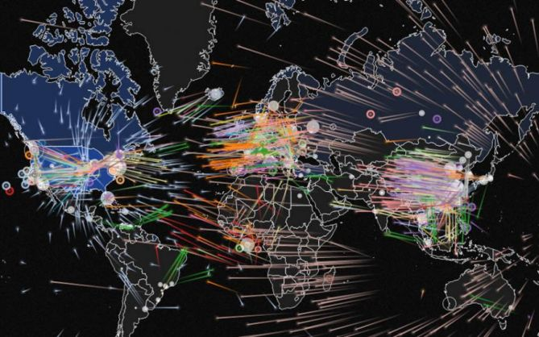

Java, Oct 29, 2020
El Informe de defensa digital de Microsoft proporciona información detallada sobre el panorama de las ciberamenazas en 2020.
Aquí hay 5 conclusiones del informe.

Domina el camino de este arte.
El Informe de defensa digital de Microsoft proporciona información detallada sobre el panorama de las ciberamenazas en 2020.
Aquí hay 5 conclusiones del informe.
Python: permite hacer más con menos en big data. Según el repositorio GitHub, Python creció un
50% el año pasado y con una cuota del 31,73% es el lenguaje más popular en el mundo, por delante
de Java (con un 17,13%) y JavaScript (con un 7,98%), según el Índice PYPL, que mide la popularidad
de los lenguajes de programación en función de la frecuencia de búsqueda de tutoriales en Internet.
Los expertos de Paradigma coinciden en que es uno de los lenguajes con más futuro por la cantidad de
ventajas que aporta, empezando por una sintaxis muy sencilla que se puede entender incluso sin saber
programar, teniendo una curva de aprendizaje muy rápida. Además, cuenta con una de las comunidades más
grandes de programadores que comparten código y librerías para cualquier aspecto que necesite una empresa
y permite desarrollar en muy pocas líneas de código lo que en otros lenguajes serían centenares, por lo
que su time-to-market es insuperable.
En 2020, celebramos los 25 años de Java. A lo largo de esos años, Java ha brindado a los usuarios más de dos décadas de innovación basada en el impulso de mejoras anteriores como Generics en Java 5, Lambdas en Java 8 y Módulos en Java 9, que culminan colectivamente en aumentar el rendimiento, la estabilidad y la seguridad de Java. plataforma en el camino.
C# combina los mejores elementos de múltiples lenguajes de amplia difusión como C++, Java, Visual Basic o Delphi.
De hecho, su creador Anders Heljsberg fue también el creador de muchos otros lenguajes y entornos como:
Turbo Pascal, Delphi o Visual J++.
La idea principal detrás del lenguaje es combinar la potencia de lenguajes como C++ con la sencillez de
lenguajes como Visual Basic, y que además la migración a este lenguaje por los programadores de C/C++/Java
sea lo más inmediata posible.
Además de C#, Microsoft propociona Visual Studio.NET, la nueva versión de su entorno de desarrollo adaptada a
la plataforma .NET y que ofrece una interfaz común para trabajar de manera cómoda y visual con cualquiera de
los lenguajes de la plataforma .NET